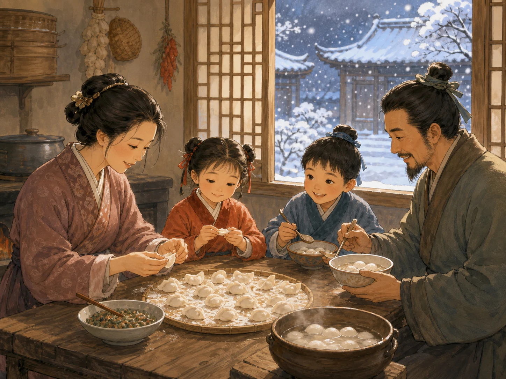

二十四节气：跟着太阳过一年
The 24 Solar Terms: Following the Sun Through the Year
Page 1
太阳的一本日历
The Sun's Calendar

By watching the sun and the changes in fields and trees, people long ago divided the year into 24 solar terms.
中国古人不只看月亮，也看太阳。他们发现，太阳在一年里会带来很有规律的变化。
于是，人们把一年分成二十四段，每一段就是一个节气。节气不是随便起的名字，而是在说大地这时候正在发生什么事。
所以节气像一本跟太阳一起写出来的日历。它告诉人们什么时候天会暖起来，什么时候露水会重，什么时候该准备过冬。
People in ancient China did not only watch the moon. They also watched the sun. They noticed that the sun brought very regular changes through the year.
So they divided the year into 24 parts, and each part became a solar term. These names were not chosen at random. They described what was happening on the earth at that time.
That made the solar terms feel like a calendar written together with the sun. They told people when the air would warm, when dew would grow heavy, and when it was time to get ready for winter.
Page 2
春天醒来了
Spring Wakes Up

Around terms like Awakening of Insects and Grain Rain, the weather grows warmer, the rain increases, and small creatures become active again.
有些节气一听名字，就像在讲故事。比如惊蛰，好像在说: 地下的小虫子也被春天叫醒了。
到了谷雨前后，很多地方的雨水更足，正适合种瓜、点豆、插秧。农民不只是看日历，也会看泥土、看云、看风。
这就是节气厉害的地方。它不是空空的词，而是和田里的活、地上的草木、还有天气的变化连在一起的。
Some solar term names sound like tiny stories. Take Awakening of Insects, for example. It almost sounds as if spring is waking up the little creatures underground.
Around Grain Rain, many places receive more rain, and it becomes a good time to plant seeds and set out rice seedlings. Farmers did not only look at a calendar. They also watched the soil, the clouds, and the wind.
That is what makes the solar terms so powerful. They are not empty words. They are tied to field work, growing plants, and the changing weather.
Page 3
外面冷，家里暖
Cold Outside, Warm Inside

Around the Winter Solstice, it is cold outside, but many families gather to make dumplings or tangyuan and fill the home with warmth.
节气不只在春天有用。到了白露、霜降，人们会发现天气一点一点变凉，也会赶紧收尾、储菜、准备过冬。
再往后，就是冬至。那是一年里白天最短、夜晚最长的时候。很多地方的人会一起吃热乎乎的食物，北方常见饺子，南方常见汤圆。
所以节气不只是农田里的提醒，也是家里的提醒。它告诉人们: 现在是什么时候，该做什么准备。
The solar terms are not only useful in spring. By White Dew and Frost's Descent, people can feel the weather turning cooler little by little, and they start finishing work, storing food, and getting ready for winter.
Later comes the Winter Solstice. That is the time of year when the day is shortest and the night is longest. In many places, families eat warm foods together. Dumplings are common in the north, and tangyuan are common in the south.
So the solar terms are not only reminders for the fields. They are reminders for the home too. They tell people what part of the year this is and what to prepare for next.
跟着大自然过日子
Living with Nature
二十四节气像一串会呼吸的名字，把太阳、天气、田野和厨房连在了一起。
它们提醒人们抬头看看天，也低头看看地，再顺着季节慢慢过一年。
The 24 solar terms are like a chain of living names that connect the sun, the weather, the fields, and the kitchen.
They remind people to look up at the sky, look down at the earth, and move through the year with the seasons.